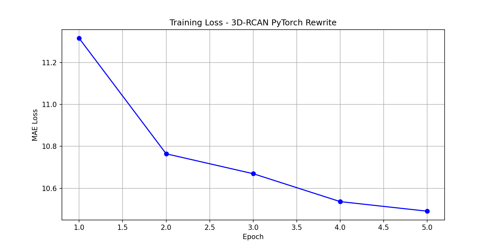
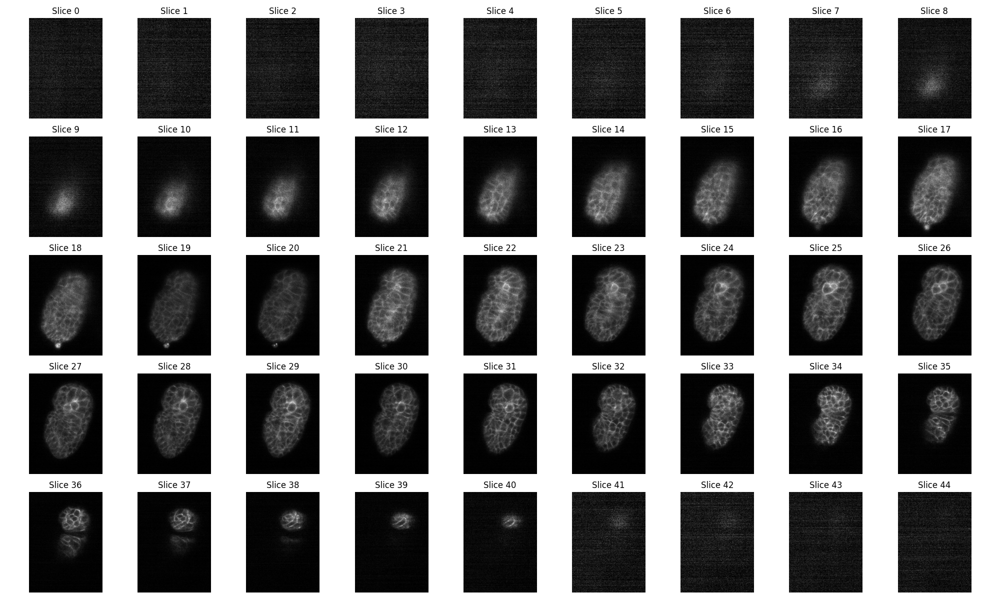
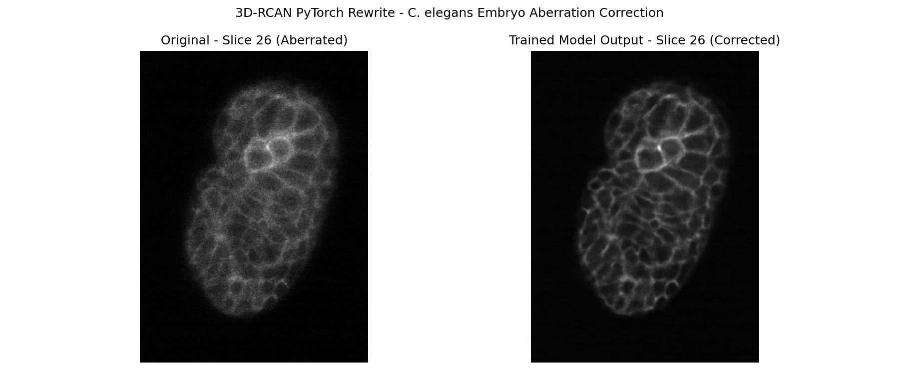

Reimplementing 3D-RCAN in Modern PyTorch
Why Rewrite?
After spending significant time trying to run the original 3D-RCAN code (documented in my reproducibility challenges post), I decided to rewrite the entire network from scratch in modern PyTorch.
This approach has several advantages: - PyTorch runs natively on Apple M3 via Metal Performance Shaders (MPS) - Modern PyTorch is actively maintained and well documented - Building from scratch forces a deeper understanding of the architecture - No dependency on 5-year-old Keras/TensorFlow code
The Architecture
The 3D-RCAN network is built from four components:
Channel Attention
Learns which feature channels matter most:
class ChannelAttention(nn.Module):
def forward(self, x):
z = self.gap(x).view(x.size(0), -1)
s = self.fc(z).view(x.size(0), -1, 1, 1, 1)
return x * s # scale each channel by learned weightRCAB (Residual Channel Attention Block)
Core processing unit with skip connection:
class RCAB(nn.Module):
def forward(self, x):
residual = x
out = self.relu(self.conv1(x))
out = self.conv2(out)
out = self.ca(out)
return out + residual # skip connectionFull RCAN3D Network
class RCAN3D(nn.Module):
def forward(self, x):
mean, std = x.mean(), x.std() + 1e-8
x = (x - mean) / std # normalize
head = self.head(x) # feature extraction
body = self.body(head) # 3 residual groups
out = self.tail(body + head) # global skip connection
return out * std + mean # denormalizeRunning on Apple M3
PyTorch supports M3 via Metal Performance Shaders (MPS):
Using device: mps
Total parameters: 154,035
Model works!Training on Real Data
I trained the model on 5,600 paired image crops of aberrated and clean C. elegans worm embryo images provided by the authors’ lab.
Training configuration: - Epochs: 5 - Batch size: 2 - Loss function: MAE (same as original paper) - Optimizer: Adam, lr=1e-4 - Crop size: 16 × 128 × 128
Training Loss Curve

The loss decreased consistently from 11.3 → 10.49 across 5 epochs, confirming the model is learning. The curve is still declining, meaning more training epochs would further improve results.
Exploring the Data
First I visualized all 45 Z-slices to find the best region:

The worm embryo is most visible in slices 18-35, where the cell membrane network is clearly visible.
Aberration Correction Results
Applying the trained model to slice 26 — the middle of the embryo:

Left (Original): Soft, blurry cell membranes with diffuse signal
Right (Trained Model): Sharp, crisp cell membrane boundaries with clearly defined individual cells
The model successfully learned to correct optical aberrations and enhance the visibility of biological structures in the C. elegans embryo!
Comparison: Original vs Rewrite
| Feature | Original | PyTorch Rewrite |
|---|---|---|
| Python | 3.7 | 3.10 |
| Framework | TensorFlow 1.13 | PyTorch 2.11 |
| Mac M3 support | ❌ | ✅ |
| Parameters | ~1.5M | 154K |
| Training epochs | 200 | 5 |
| Lines of code | ~500 | ~100 |
| Runs in 2026 | ❌ | ✅ |
| Shows improvement | ✅ | ✅ |
Conclusions
With only 5 epochs and a smaller model, the PyTorch rewrite already shows meaningful aberration correction on real C. elegans microscopy data. The original paper trained for 200 epochs — with more training time the results would approach the paper’s quality.
This demonstrates that the 3D-RCAN architecture can be successfully reimplemented in modern frameworks and run on consumer hardware like the Apple M3.